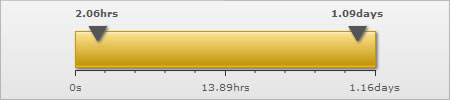
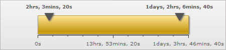

Number Formatting > Recursive Number Scaling |
Recursive number scaling comes into the picture when you have number scales defined for your chart. Let's jump to an example straightaway to understand this better. Suppose we have a linear gauge which plots the time taken by a machine to do various tasks. Since the task can take any amount of time ranging from a few seconds to a few days, it is very tricky to select a unit in which to show the data. Hence, we will define a number scale for the chart which would take seconds as the basic unit and convert it into minutes, hours, weeks etc depending on the value. The number scale for the chart would be: 60 seconds = 1 minute We can define the same in our chart using: <chart defaultNumberScale='s' numberScaleValue='60,60,24,7' numberScaleUnit='min,hr,day,wk' formatNumberScale='1' ... > Please see the Number Scaling section for more details on how to build a number scale. Now let's consider the XML below: |
<chart lowerLimit='0' upperLimit='100000' defaultNumberScale='s' numberScaleValue='60,60,24,7' numberScaleUnit='mins,hrs,days,wks' formatNumberScale='1' majorTMNumber='3' chartLeftMargin='75' chartRightMargin='75'> <value>94000</value> |
| The above XML when used for a horizontal linear gauge would give us this: |
|  |
| You can see above how owing to the number scale we defined, the values in seconds are getting converted into hours, mins etc according to the magnitude of the value entered. Neat work, but wouldn't you rather prefer this? |
|  |
Notice how 2.06 hours is converted to 2 hrs, 3 mins and 20 s; 1.09 days to 1 day, 2 hrs, 6 mins and 40 s. This chart makes use of recursive number scaling and after converting the time in seconds to say hours, whatever is left over is not converted into decimals and shown. It is rather converted into smaller units of time and broken down as far as possible - so the remaining seconds are first converted to minutes and then when the seconds are too few to be converted into minutes, then they are displayed in seconds itself. This gives us a much a much fairer idea of how much time was used for each task. To use recursive number scaling, all you have to do is set <chart ... scaleRecursively='1' .. >. You can also define the separator you want to use to separate the various units making up time for a task using scaleSeparator. In the above example, we have used commas to separate the hours from minutes and minutes from seconds. So we had to set scaleSeparator=', '. You can set the same to any character you want. The entire XML for the chart above is: |
<chart lowerLimit='0' upperLimit='100000' defaultNumberScale='s' numberScaleValue='60,60,24,7' numberScaleUnit='mins,hrs,days,wks' formatNumberScale='1' majorTMNumber='3' chartLeftMargin='75' chartRightMargin='75' scaleRecursively='1' scaleSeparator=', '> <value>94000</value> |
| Controlling the levels of recursion |
| Suppose in the above chart, instead of 1 day, 2 hrs, 6 mins and 40 s, you are pretty happy with showing 1 day, 2 hrs itself either for space constraints or some other reason. You can control the levels of recursion all the numbers on your chart are showing using maxScaleRecursion. Suppose you want only 2 levels of recursion, then set <chart ... maxScaleRecursion='2'>. This would convert the above chart to: |
| Notice how all the numbers on the chart are using a maximum of 2 time units - the rest have been truncated. When you want all the units of a number to be shown on the chart, you can either omit the maxScaleRecursion attribute or set it to -1. |